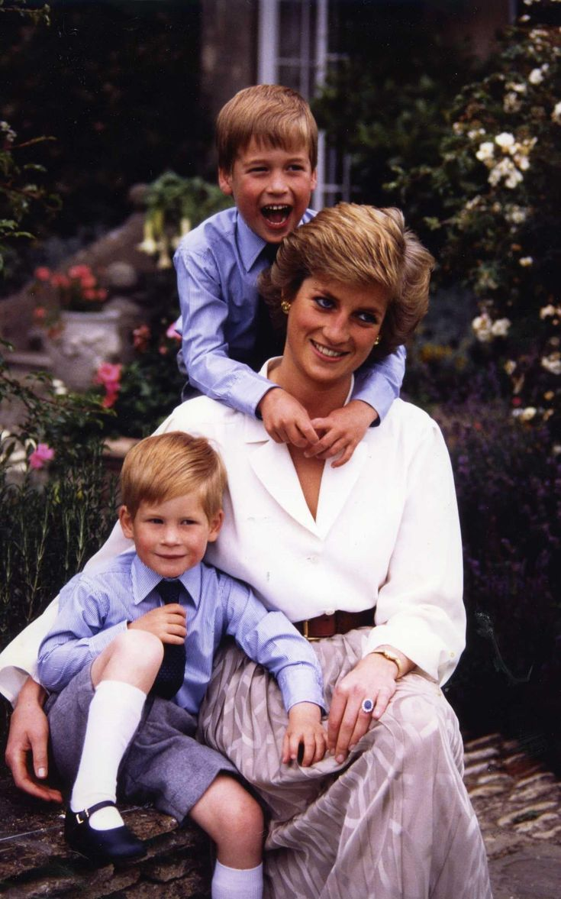
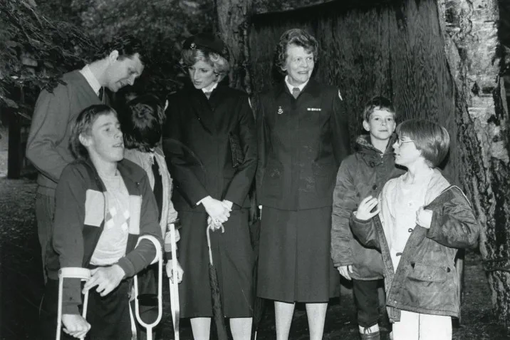
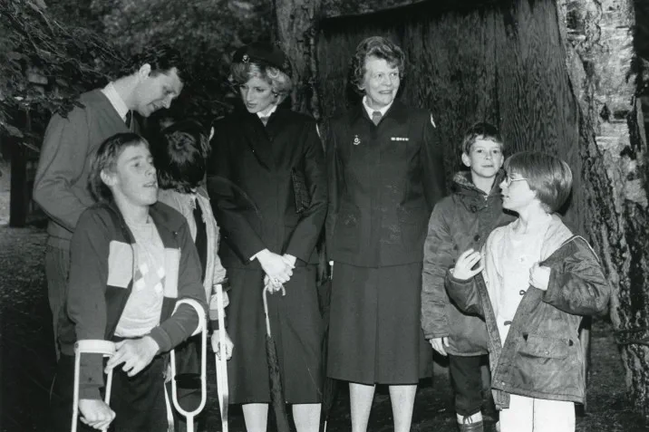

The Queen of Hearts: A Life of Grace, Compassion, and Humanity

Diana, Princess of Wales was the consort from 1981-96; the mother of William and Harry. She was known for her charm and charisma, using her status to aid charitable causes.
Diana, Princess Of Wales ♕
↬ Diana was born on July 1st, 1961, near Sanringham, England. She had two siblings, Jane Fellowes and Sarah Mcorquodale
and a brother, Charles Spender.
↬ Diana attended West Heath School, she was known for her shyness while going up,
but took an interest in music and dance.
↬ She became Lady Diana Spencer after her father inherited the title of Earl Spencer in 1975. Diane had a great fondness for children, absolutely adored them.
After finishing school, Diana moved to London, where she began working with children and eventually becoming an assistant at Young England Kindergarden.
↬ Diana met Prince Charles in 1977, when he was dating her older sister Sarah. Although, Charles first took interest in her as a potential bride when they
reconnected at a mutals friends home during the summer of 1980. The press and public were fascinated by the odd couple; the reserved
garden- loving prince and the shy young woman with interest in fashion and popular culture. Diana met Charles family during a visit to
Balmoral Castle in Scotland and was well received by Queen Elizabeth II and Prince Philip, according to the Tina Brown book The Diana Chronicles.
↬Diana Spencer became Diana, Princess of Wales, when she married Charles on July 29, 1981. Their wedding took place at St. Paul’s Cathedral.
↬Diana felt overwhelmed by her royal duties and the intense media coverage of nearly every aspect of her life. She began to develop and
pursue her own interests, serving as a strong supporter of many charities and worked to help the homeless, people living with HIV and AIDS and children in need.
↬They had two children, Prince William and Prince Harry. In 1996 their marriage ended in divorce. After that she was not
allowed to call herself simply the “princess of Wales.” Instead, she became known as “Diana, princess of Wales.”

Sons
↬ Diana and Charles had two son together: Prince William Arthur Phillip Louis,
born on June 21st, 1982. Prince Henry Charles ALbert David; Known as Prince Harry,
born on September 15th, 1984.
↬ In 1983, when William was 9 months old, Diana did not want to be apart from him during a 6 week tour
of Australia and New Zealand, so she broke royal tradition and took William with her. Although the decision drew some critism,
the appareaance on the tour was largely applauded by the public.
Charity Work
↬ The princess was well known for her charity work. She helped children, the sick, the homeless, and disabled people.
She also called for a worldwide ban on landmines (bombs buried on purpose in the ground), which kill and injure innocent people.
↬ Princess Diana was always committed to using her public profile to bring about positive change.
A firm believer in the power of young people, she became patron of the Red Cross Youth in 1983,
which gave her an increasingly visible role with the British Red Cross.
↬ In July 1985, Diana visited Activenture, a Red Cross adventure camp for children with disabilities at Hindleap Warren in East Sussex.
Barbara Summerfield, now in her 80s and from Saltdean, was a youth officer at the time and has fond memories of Diana’s visit.
“What went down well, more than anything else, was that Diana was a real person who the children could talk to,” said Barbara.
"THEY SPOKE TO DIANA AS A NORMAL PERSON, A FRIEND EVEN. AND THAT'S THE WAY SHE SPOKE TO THE CHILDREN."
Barabara Summerfield, British Red Cross vice president, Sussex

Princess Diana visiting children at Hindleep Warren in 1985.
Sons
↬ Diana and Charles had two son together: Prince William Arthur Phillip Louis,
born on June 21st, 1982. Prince Henry Charles ALbert David; Known as Prince Harry,
born on September 15th, 1984.
↬ In 1983, when William was 9 months old, Diana did not want to be apart from him during a 6 week tour
of Australia and New Zealand, so she broke royal tradition and took William with her. Although the decision drew some critism,
the appareaance on the tour was largely applauded by the public.
Charity Work
↬ The princess was well known for her charity work. She helped children, the sick, the homeless, and disabled people.
She also called for a worldwide ban on landmines (bombs buried on purpose in the ground), which kill and injure innocent people.
↬ Princess Diana was always committed to using her public profile to bring about positive change.
A firm believer in the power of young people, she became patron of the Red Cross Youth in 1983,
which gave her an increasingly visible role with the British Red Cross.
↬ In July 1985, Diana visited Activenture, a Red Cross adventure camp for children with disabilities at Hindleap Warren in East Sussex.
Barbara Summerfield, now in her 80s and from Saltdean, was a youth officer at the time and has fond memories of Diana’s visit.
“What went down well, more than anything else, was that Diana was a real person who the children could talk to,” said Barbara.
"THEY SPOKE TO DIANA AS A NORMAL PERSON, A FRIEND EVEN. AND THAT'S THE WAY SHE SPOKE TO THE CHILDREN."
Barabara Summerfield, British Red Cross vice president, Sussex
 Princess Diana visiting children at Hindleep Warren in 1985.